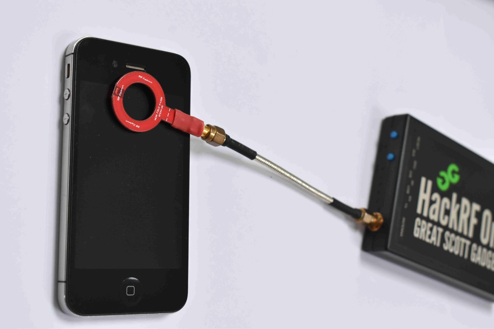
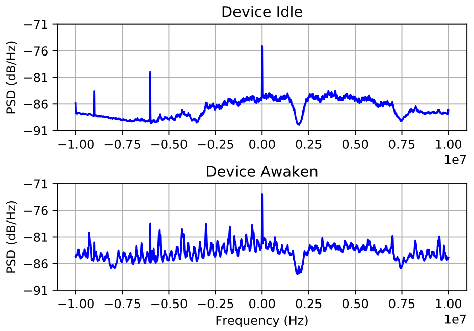
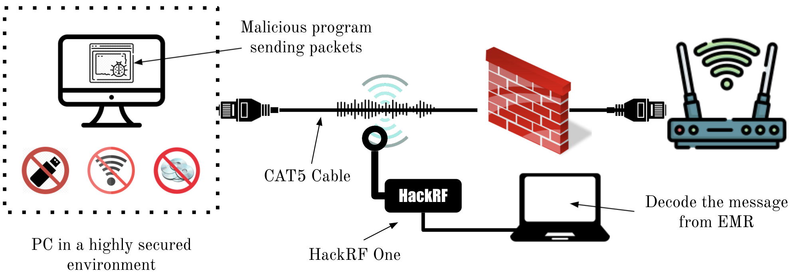
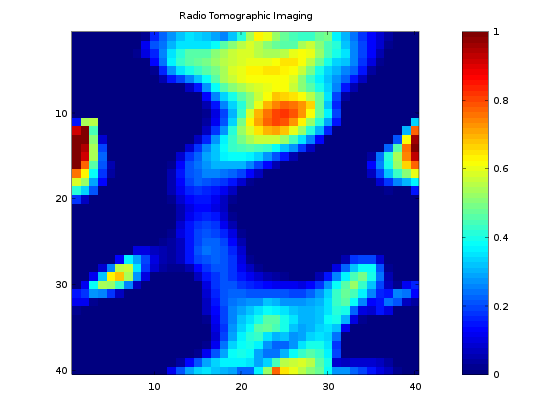
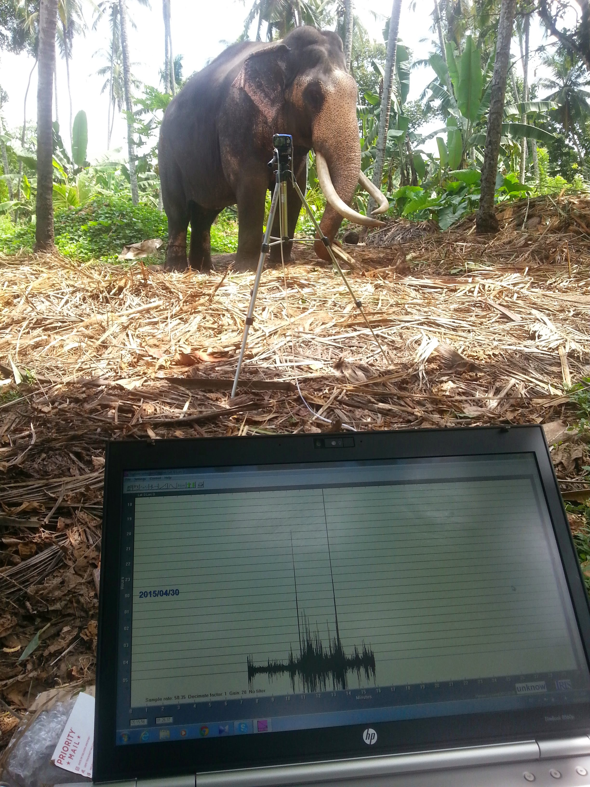
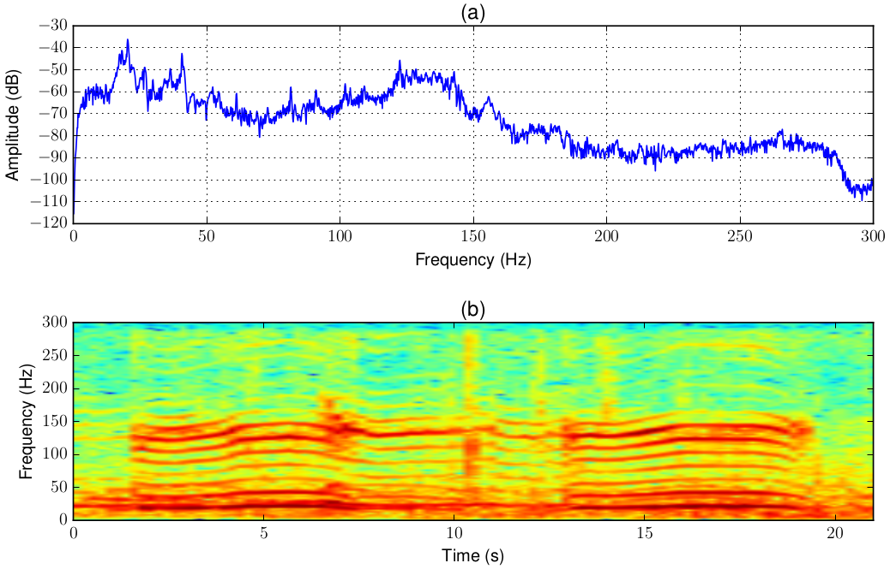

Signal Insights Research Lab

The objective of the Signal Insights Research Lab is to explore the potential of exploiting various kinds of signals originating from various sources — be it human-made equipment or biological — for the purpose of information extraction from a distance and surveillance. The research scope of the Signal Insights Research Lab spans across a very wide arena from electromagnetic side-channel analysis of computers to passive acoustic monitoring of living things, such as elephants.
The lab consists of various hardware equipment that can be used in research. For example, we have oscilloscopes, function generators, logic analysers, and various other equipment that can be used to take measurements and monitor hardware devices. We have a fabrication desk where soldering and constructing hardware components is possible. Furthermore, we have a large collection of embedded devices, wireless treansceivers, and modules for our research work. The following are some of the ongoing research work being carried out at the lab:
1. Electromagnetic Side-Channel Analysis
Computing devices are generating electromagnetic (EM) radiation due to their internal opertations, such as the CPU executing instructions and handling data. These radiation are well-known to be leaking information about the internal operations of the device. The field of research that exploits these unintended radiation from computers for the purpose of extracting data is called Electromagnetic Side-Channel Analysis (EM-SCA). We can extract various internal operational detais of a target device through EM-SCA techniques.
 Read more about this research area:
Asanka Sayakkara and Nhien-An Le-Khac , “Electromagnetic Side- Channel Analysis for IoT Forensics: Challenges, Framework, and Datasets,” in IEEE Access, vol 9, pp. 113585-113598, 2021. doi: https://doi.org/10.1109/ACCESS.2021.3104525 [PDF]
Asanka Sayakkara, Le-Khac, N-A., and Scanlon, M., "A survey of electromagnetic side-channel attacks and discussion on their case-progressing potential for digital forensics", Elsevier Digital Investigation, 2019. [PDF]
2. Electromagnetic Covert Channels
The unintended EM radiation of computers are not only leaking information about their internal operations. There is a possibility to exploit these radiation to make deliberate transmissions of information wirelessly to an intended receiver. The EM Covert Channel research area is all about how to purposefully generate EM radiation from computing hardware and modulate data into it. The radiation from the computer hardware acts as the carrier wave for our data. Our current focus is on how to build such EM covert channels using the radiation caused by Ethernet cables.
Read more about this research area:
Shakthi Sachintha, Nhien-An Le-Khac, Mark Scanlon, and Asanka P. Sayakkara, "Data Exfiltration through Electromagnetic Covert Channel of Wired Industrial Control Systems", Applied Sciences 13, no. 5 (2023): 2928. doi: https://doi.org/10.3390/app13052928 [PDF]
3. Radio Tomographic Imaging
Radio waves are attenuating with distance from its transmitter. However, having various obstacles in the middle of line-of-sight propagation path of of a radio wave can cause even further attenuation of signal strength. Received Signal Strength Indicator (RSSI) is a measure of the signal strength at the receiver. Additionally, bouncing off obstacles can cause variations to the signal's phase as well, which can be measured using Channel State Information (CSI) parameter at the receiver. The field of Radio Tomographic Imaging (RTI) is exploring the possibility of using signal strength attenuation and phase variations due to obstacles as a way to identify, geographically map, and even track the movements of obstacles. These obstacles can be humans or various other physical things.

Read more about this research area:
Lasith Niroshan, Chathura Suduwella, Asanka Sayakkara, Chamath Keppitiyagama and Kasun De Zoysa. "Enhancing the Accuracy of Wi-Fi Tomographic Imaging Using a Human-Interference Model". In Proceedings of the International Conference on Advances in ICT for Emerging Regions, ICTer 2018, Colombo, Sri Lanka. [PDF]
Dilushi Piumwardane, Chathura Suduwella, Isuru Dharmadasa, Asanka Sayakkara, Kasun De Zoysa and Chamath Keppitiyagama. "Poster Abstract: An Empirical Study of WiFi-based Radio Tomographic Imaging". In Proceedings of the 15th ACM Conference on Embedded Networked Sensor Systems, SenSys 2017, Delft, The Netherlands. [PDF]
Rumesh Eranga, Asanka Sayakkara and Chamath Keppetiyagama. "A Data Delivery Protocol for Extremely Resource Constrained Wireless Sensors". In Proceedings of the International Conference on Advances in ICT for Emerging Regions, ICTer 2016, Colombo, Sri Lanka. [PDF]
4. Passive Acoustic Monitoring
Wild animals are making various acoustic vocalisations. Among various animals, elephants are very important species in Sri Lanka who are well-known to generate low-frequency acoustic, i.e., infrasonic, vocalisations for their communication. Unlike the usual human audible frequencies, infrasonics are traveling long distances unobstructed by trees and other objects on the terrain. Due to this reason, infrasonic vocalisations of elephants can be used to monitor their presense and bahaviour from a safe distance. In the field of Passive Acoustic Monitoring (PAM), our work is on building low-cost hardware equipment that can capture infrasonics to support scientist working on elephant conservation and bahavioural studies.
 Read more about this research area:
Chamath K. Silva, Vinuri Piyathilake, Chamath Keppitiyagama, Asanka P. Sayakkara, Prabash Kumarasinghe, Namal Jayasuriya, and Udayanga Sampath, "A Wavelet Transform-based Feature Extraction Pipeline for Elephant Rumble Detection", ICTer Journal, September Issue, 2023. [PDF]
Asanka Sayakkara, Namal Jayasuriya, Tharindu Ranathunga, Chathura Suduwella, Nithila Vithanage, Chamath Keppitiyagama, Kasun De Zoysa, Kasun Hewage and Thiemo Voigt. "Eloc: Locating Wild Elephants using Low-cost Infrasonic Detectors". In Proceedings of the International Conference on Distributed Computing on Sensor Systems, DCOSS 2017, Ottawa, Canada. (Best Paper Award) [PDF]
Poshitha Dabare, Chathura Suduwella, Asanka Sayakkara, Damitha Sandaruwan, Chamath Keppitiyagama, Kasun De Zoysa, Kasun Hewage, and Thiemo Voigt. "Listening to the Giants: Using Elephant Infra-Sound to Solve the Human-Elephant Conflict". In Proceedings of the 6th Workshop on Real World Wireless Sensor Networks, RealWSN 2015, Seoul, South Korea. [PDF]
5. Other Interested Research Areas
mmWave FMCW radar technology for security purposes.
Multispectral imagery.
Like to do research with me?
I am always open for supervising and collaborating with others in research work. If you are interested in any of my research work, or think you've got some research idea that I might like, please feel free to contact me. If you are a student who is interested in doing research with me, I would like to suggest you building certain skills as early as possible that will later be very useful in succeeding in research.Being comfortable with Unix-like environments, such as GNU/Linux operating system. Perhaps, this will help but who knows: https://linux.die.net/Intro-Linux
Experiencing LaTeX document processing system. A good place to start: https://www.overleaf.com/learn
Already knowing or the will to learn Python and C languages. There are plenty of learning resources out there.
Good reading and writing skills in English. Communication is an important element in science. Make reading a habit. Read all kinds of things, research papers, scientific magazines, novels, and what not. Similarly, write your thoughts somewhere, such as in a blog, if not research papers.
Knowledge in Digital Signal Processing (DSP), machine learning, and relevant software libraries.
Experience with Software Defined Radio (SDR) hardware (HackRF, RTL-SDR) and software (GNURadio).
Experience in designing, building and testing electronic circuits.
Hands-on experience on experimental IoT/embedded systems, such as Arduino, ESP32, and Raspberry Pi.
Cheers!